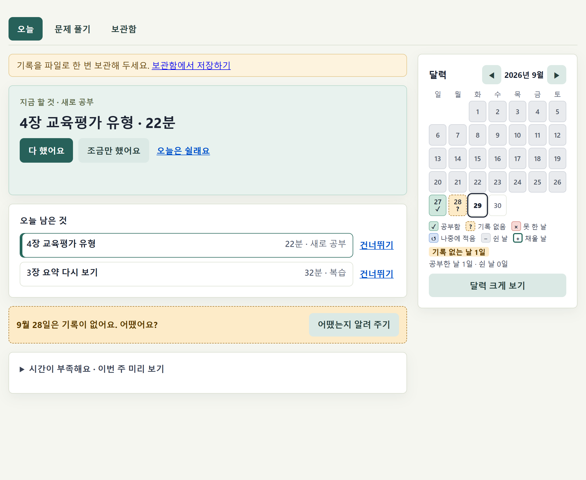
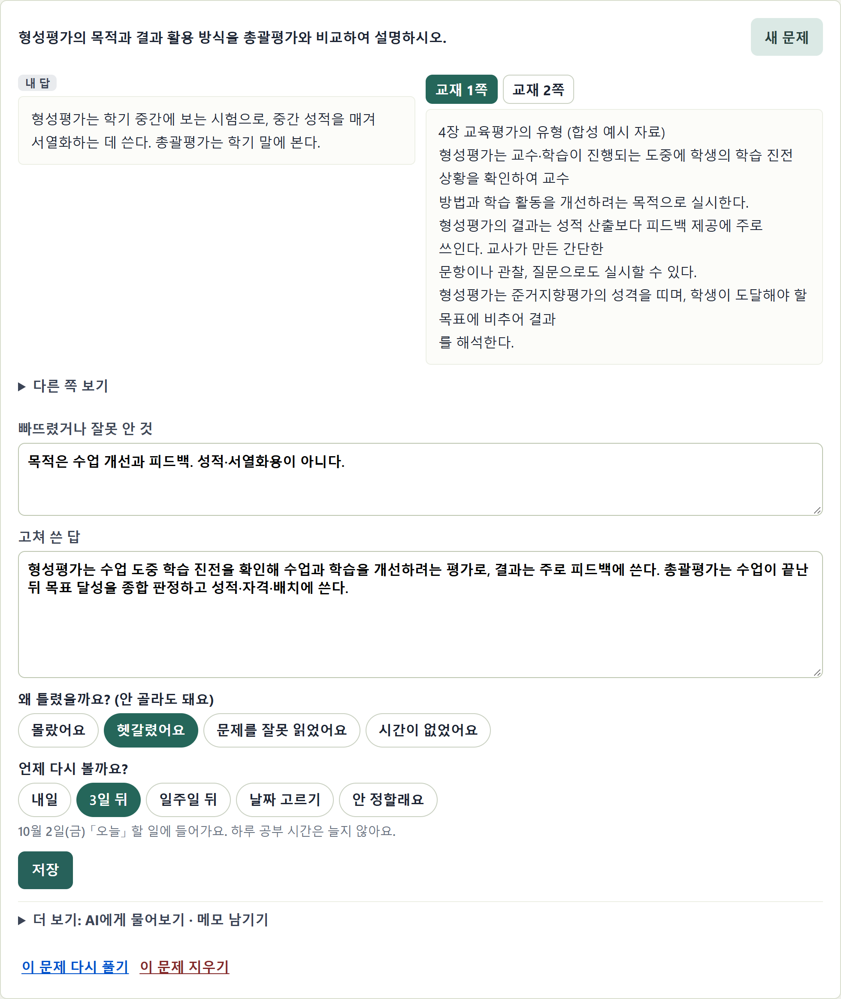

「무엇을 공부하나요?」가 나옵니다. 공부할 것을 한 줄씩(이름, 걸릴 시간, 새로 공부 또는 복습) 적고, 하루에 공부할 수 있는 시간을 고른 뒤 계획 만들기를 누릅니다. 교재 PDF는 나중에 넣어도 됩니다. PDF는 브라우저 안에서만 읽으며, 처음 30쪽의 글자를 읽어 둡니다(50MB까지, 글자를 선택할 수 있는 PDF만).
열면 「지금 할 것」이 바로 나옵니다. 공부한 뒤 다 했어요, 일부만 했으면 조금만 했어요를 누르고 분을 적습니다. 쉬는 날은 오늘은 쉴래요. 「오늘 남은 것」에서 다른 것을 누르면 그것이 지금 할 것이 됩니다. 기록이 없는 지난 날이 있으면 「어땠어요?」라고 묻습니다. 공부했는데 적는 걸 깜빡했어요, 못 했어요, 쉬는 날이었어요 가운데 하나를 고릅니다(한 번 고르면 바꿀 수 없습니다).

문제와 내 답을 교재를 보기 전에 먼저 씁니다. 교재랑 맞춰 보기를 누르면 내 답은 그대로 남고, 문제의 낱말이 들어간 교재 쪽이 옆에 나옵니다(없으면 다른 쪽 보기). 빠뜨렸거나 잘못 안 것, 고쳐 쓴 답을 적고, 「언제 다시 볼까요?」를 고른 뒤 저장합니다. 고른 날 그 문제가 「오늘」 할 일에 들어갑니다. 하루 공부 시간은 늘지 않습니다.

「다시 볼 문제」와 「푼 문제」가 모입니다. 다시 본 뒤 다시 봤어요를 누릅니다. 기록은 이 브라우저에만 있으니 일주일에 한 번 보관 파일 저장을 누르고, 그 파일을 드라이브나 USB에도 두십시오. 기록이 사라지면 보관 파일 불러오기로 되살립니다. 교재 넣기·바꾸기, 공부할 것 바꾸기, 내 노트(Obsidian 등)로 보내기, 기록 모두 지우기는 더 보기 안에 있습니다.